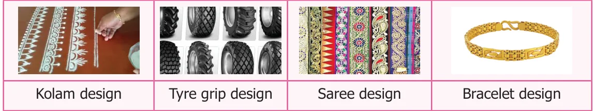
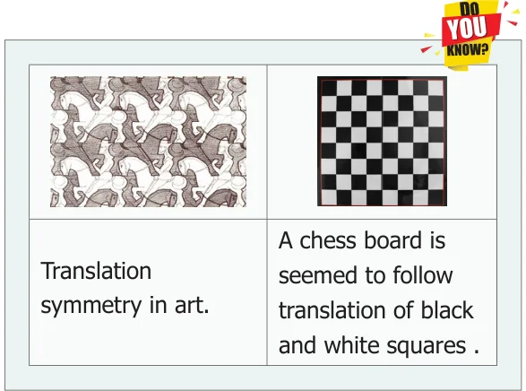
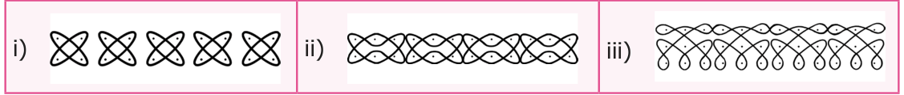
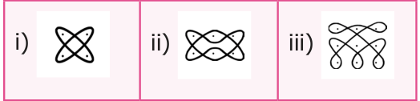
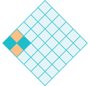
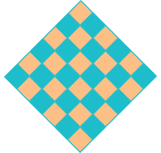
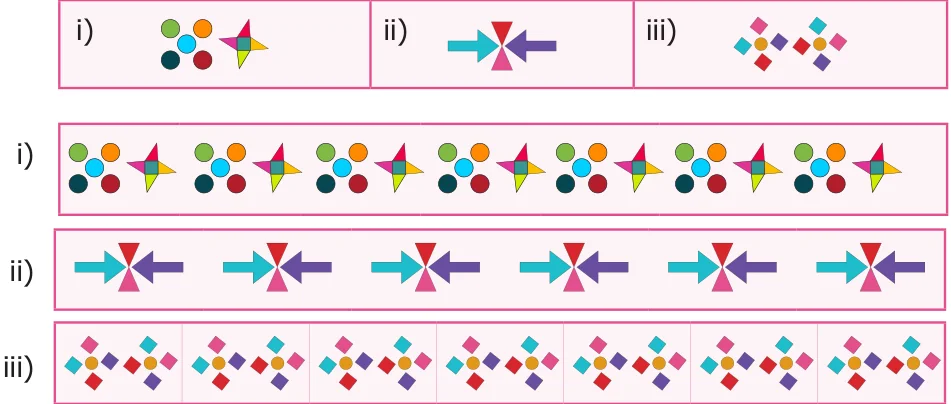

<!DOCTYPE html>
<html lang="en">
<head>
<meta charset="UTF-8">
<meta name="viewport" content="width=device-width,initial-scale=1">
<title>4.5 Translational Symmetry — Symmetry</title>
<meta name="description" content="Class 6 Mathematics · Term 3 · Symmetry · 4.5 Translational Symmetry">
<link rel="icon" href="data:image/svg+xml,<svg xmlns='http://www.w3.org/2000/svg' viewBox='0 0 100 100'><text y='.9em' font-size='90'>📘</text></svg>">
<link rel="stylesheet" href="../../../assets/book.css">
<link rel="stylesheet" href="https://cdn.jsdelivr.net/npm/katex@0.16.11/dist/katex.min.css" crossorigin="anonymous">
</head>
<body>
<header class="topbar">
<div class="topbar-in">
  <div class="crumb">
    <span class="c1"><a href="../../../index.html">Library</a> · <a href="../../index.html">Class 6 Mathematics · Term 3</a></span>
    <span class="c2">Symmetry · 4.5 Translational Symmetry</span>
  </div>
  <a class="tb-btn" data-nav="prev" href="../../04-symmetry/04-rotational-symmetry-4.4/index.html" title="4.4 Rotational Symmetry">←</a>
  <details class="drawer"><summary class="tb-btn" title="Sections in this chapter">☰</summary>
<div class="drawer-panel"><div class="dh">Symmetry</div><a href="../01-introduction-4.1/index.html">4.1 Introduction</a><a href="../02-line-of-symmetry-4.2/index.html">4.2 Line of Symmetry</a><a href="../03-reflection-symmetry-4.3/index.html">4.3 Reflection Symmetry</a><a href="../04-rotational-symmetry-4.4/index.html">4.4 Rotational Symmetry</a><a href="../05-translational-symmetry-4.5/index.html" aria-current="page">4.5 Translational Symmetry</a><a href="../06-exercise-4.1/index.html">Exercise 4.1</a><a href="../07-exercise-4.2/index.html">Exercise 4.2; Miscellaneous Practice Problems</a><a href="../08-summary/index.html">Summary</a></div></details>
  <a class="tb-btn" data-nav="next" href="../../04-symmetry/06-exercise-4.1/index.html" title="Exercise 4.1">→</a>
  <button class="tb-btn" data-theme-toggle title="Toggle light / dark" aria-label="Toggle light or dark theme">◐</button>
</div>
<div class="progress"><span style="width:69.6%"></span></div>
</header>
<main class="wrap">
<div class="sec-head">
  <p class="eyebrow"><a href="../index.html">Chapter 4 · Symmetry</a></p>
  <h1>4.5 Translational Symmetry</h1>
  <p class="sec-meta">Textbook pages 11–13 · 10 figures</p>
</div>
<article class="prose">
<p>Look at the following figures:</p>
<figure class="fig table-fig wide"></figure>
<figure class="fig table-fig"></figure>
<p>Here a particular pattern or design is continued throughout. The pattern changes its place without rotation or reflection. The exact image is found without changing its orientation.</p>
<p>Thus, translation symmetry occurs when a pattern slides to a new position. The sliding movement involves neither rotation nor reflection.</p>
<p>Example 14 Which pattern is translated in the given kolams?</p>
<figure class="fig table-fig wide"></figure>
<h4 class="callout-h" id="s-solution">Solution</h4>
<figure class="fig"></figure>
<figure class="fig side-fig"></figure>
<p>Example 15 Using the given pattern, colour and complete the boxes in such a way that it posseses translation symmetry.</p>
<figure class="fig"></figure>
<h4 class="callout-h" id="s-solution">Solution</h4>
<p>Example 16 Translate the given pattern and complete the design in the rectangular strip.</p>
<figure class="fig table-fig wide"></figure>
<h4 class="callout-h" id="s-solution">Solution</h4>
<h2 id="s-symmetry-ict-corner">Symmetry ICT CORNER</h2>
<h2 id="s-expected-outcome">Expected Outcome</h2>
<p>Step \(- 1\)</p>
<p>Open the Browser by typing the URL Link given below (or) Scan the QR Code. GeoGebra work sheet named “Symmetry” will open. There are two worksheets under the title “Line of Symmetry” and “Rotational Symmetry”. In the Line of Symmetry drag the points on left side of both the figures and click reflect to see full figure</p>
<h4 class="callout-h" id="s-step-2">Step \(- 2\)</h4>
<p>In Rotational Symmetry click on New Shape and find the order of rotational symmetry. Type your answer in the box and hit enter key to see whether your answer is right.</p>
<h2 id="s-step1-step2">Step1 Step2</h2>
<p>Browse in the link:</p>
</article>
<nav class="pager"><a class="" data-nav="prev" href="../../04-symmetry/04-rotational-symmetry-4.4/index.html"><span class="dir">← Previous</span><span class="t">4.4 Rotational Symmetry</span><span class="ch">Symmetry</span></a><a class="nx" data-nav="next" href="../../04-symmetry/06-exercise-4.1/index.html"><span class="dir">Next →</span><span class="t">Exercise 4.1</span><span class="ch">Symmetry</span></a></nav>
</main><footer class="site">Generated from the source textbook PDFs · text, figures and exercises belong to their respective publishers.</footer><script defer src="https://cdn.jsdelivr.net/npm/katex@0.16.11/dist/katex.min.js" crossorigin="anonymous"></script>
<script defer src="https://cdn.jsdelivr.net/npm/katex@0.16.11/dist/contrib/auto-render.min.js" crossorigin="anonymous"
  onload="renderMathInElement(document.body,{delimiters:[
    {left:'\\(',right:'\\)',display:false},
    {left:'$$',right:'$$',display:true},
    {left:'\\[',right:'\\]',display:true}],throwOnError:false,ignoredTags:['script','noscript','style','textarea','pre','code']})"></script>
<script src="../../../assets/book.js"></script>
</body>
</html>
